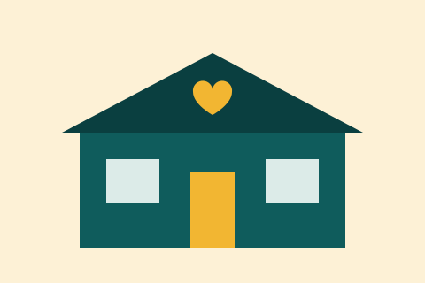
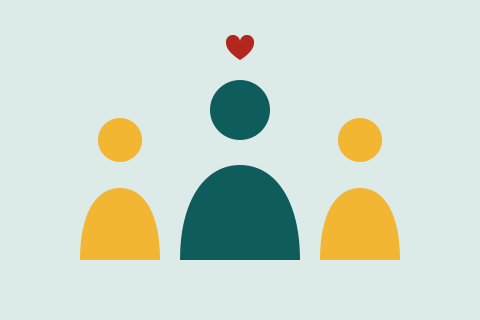

Projeto ativoDoação
Mesa Cheia
Distribuição semanal de cestas básicas e refeições para famílias cadastradas.
Nossos projetos conectam pessoas dispostas a ajudar com quem mais precisa. Cada ação é planejada com a comunidade e acompanhada por indicadores de resultado.

Distribuição semanal de cestas básicas e refeições para famílias cadastradas.
Reforço escolar gratuito para crianças e adolescentes, com acompanhamento de voluntários.
Mutirões de limpeza, feiras de saúde e eventos de convivência nos bairros atendidos.
As doações mantêm nossas atividades e garantem que cada família receba apoio de forma regular. Todo recurso é aplicado diretamente nas frentes abaixo:
Doar é simples. Você pode levar alimentos e materiais até nossa sede, contribuir com um valor mensal ou fazer uma doação única. Antes de começar, faça seu cadastro para receber as orientações e o comprovante.

O trabalho voluntário é a base do nosso trabalho. Todos podem colaborar, conforme sua disponibilidade e habilidades.
Preencha o formulário de cadastro e nossa equipe entrará em contato para apresentar as próximas atividades.
E-mail
contato@institutoesperanca.org.br
Telefone
(11) 4002-8922
Endereço
Rua da Solidariedade, 120 – Centro
São Paulo – SP, 01000-000
Horário de atendimento
Segunda a sexta, das 9h às 17h